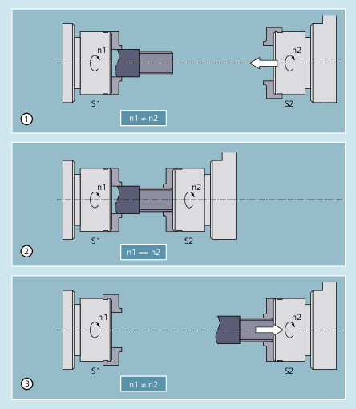
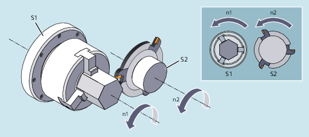

Synchronous spindle coupling enables speed-synchronous traversing of the following spindle (FS) and leading spindle (LS) of a synchronous spindle pair. With active coupling (synchronous mode), the following spindle follows the movements of the leading spindle according to the specified ratio.
The synchronism mode is adjustable. The following variants are available:
Speed synchronism (nFS = nLS)
Position synchronism (ϕFS = ϕLS)
Position synchronism with angular offset (ϕFS = ϕLS+ ∆ϕ)
The synchronous spindle pairs for each machine can be assigned a fixed configuration by means of channel-specific machine data or defined for specific applications via the part program. Up to 2 synchronous spindle pairs can be operated simultaneously on each NC channel.
Typical applications are:
Workpiece transfer on the fly, e.g. for machining on the rear side (transmission ratio: 1:1)
① | The speeds n1 of spindle S1 and n2 of spindle S2 are different (n1 ≠ n2). Synchronization is therefore required before workpiece transfer (transmission ratio: 1:1). |
② | After synchronization of the spindle speeds (n1 == n2), the workpiece is transferred. |
③ | After workpiece transfer, machining of the rear side can take place. |
Multi-edge machining (polygon turning), speed synchronism (transformation ratio: n1:n2)

| Define/change coupling on user-specific basis | |
| Activate coupling The following spindle synchronizes to the leading spindle based on the actual speed. | |
| Activate the coupling and accept the spindle programming M3 S... or M4 S... A difference in speed for the following spindle is transferred immediately. | |
| Deactivate coupling | |
| Deactivate coupling with stop of the following spindle | |
| Reset coupling parameters to the configured values The values set in the machine and setting data are activated. | |
| Delete user-defined coupling | |
| Wait for synchronized run condition | |
| Identifier (spindle number) of the following spindle | |
| Identifier (spindle number) of the leading spindle Note: | |
| ||
| Numerator of the gear ratio | |
| Denominator of the gear ratio | |
The transmission ratio is the ratio between the following and leading spindle speeds: nFS / nLS Programming is performed by specifying the numerator and denominator of the transmission ratio:
Specifying the denominator is optional. The default value of 1.0 is set if nothing is specified. Example: Following spindle S2 and leading spindle S1, transformation ratio = 1/1
Note: | ||
| Block change behavior | |
| Immediately (default setting) | |
| On reaching "Synchronism fine" | |
| On reaching "Synchronism coarse" | |
| When reaching IPOSTOP; i.e. after setpoint-based synchronism | |
The block change behavior is effective modally. Note: | ||
| Coupling type: Coupling between FS and LS | |
| Setpoint linkage (default) | |
| Actual value coupling | |
| Speed coupling | |
The coupling type is modal. Note: | ||
| Angular offset between the leading and following spindles referred to 0° position of the leading spindle in the positive direction of rotation. | |
Value range: | 0°… 359.999° | |
Note: | ||
| Program code | Comment |
|---|---|
| Leading spindle = master spindle = spindle 1 | |
| Following spindle = spindle 2 | |
| N05 M3 S3000 M2=4 S2=500 | Leading spindle rotates at 3000 rpm, following spindle at 500 rpm. |
| N10 COUPDEF(S2,S1,1,1,"NOC","Dv") | Definition of the coupling (can also be configured). |
| ... | |
| N70 SPCON | Bring leading spindle into closed-loop position control (setpoint coupling). |
| N75 SPCON(2) | Bring following spindle into closed-loop position control. |
| N80 COUPON(S2,S1,45) | On-the-fly coupling to offset position = 45 degrees. |
| ... | |
| N200 FA[S2]=100 | Positioning speed = 100 degrees/min |
| N205 SPOS[2]=IC(-90) | Traverse with 90 degrees overlay in negative direction. |
| N210 WAITC(S2,"Fine") | Wait for "fine" synchronism. |
| N212 G1 X... Y... F... | Machining |
| ... | |
| N215 SPOS[2]=IC(180) | Traverse with 180 degrees overlay in the positive direction. |
| N220 G4 S50 | Dwell time = 50 revolutions of the master spindle |
| N225 FA[S2]=0 | Activate configured velocity (MD). |
| N230 SPOS[2]=IC(-7200) | 20 revolutions. Move with configured velocity in the negative direction. |
| ... | |
| N350 COUPOF(S2,S1) | Couple-out on-the-fly, S=S2=3000 |
| N355 SPOSA[2]=0 | Stop FS at zero degrees. |
| N360 G0 X0 Y0 | |
| N365 WAITS(2) | Wait for spindle 2. |
| N370 M5 | Stop FS. |
| N375 M30 |
| Program code | Comment |
|---|---|
| Leading spindle = master spindle = spindle 1 | |
| Following spindle = spindle 2 | |
| N01 M3 S500 | Leading spindle rotates at 500 rpm. |
| N02 M2=3 S2=300 | Following spindle rotates at 300 rpm. |
| ... | |
| N10 G4 F1 | Dwell time of master spindle. |
| N15 COUPDEF (S2,S1,-1) | Coupling factor with ratio -1:1 |
| N20 COUPON (S2,S1) | Activate coupling. The speed of the following spindle results from the speed of the leading spindle and coupling factor. |
| ... | |
| N26 M2=3 S2=100 | Programming a difference in speed. |
1. Activate coupling during previous programming of following spindle with COUPON
| Program code | Comment |
|---|---|
| Leading spindle = master spindle = spindle 1 | |
| Following spindle = spindle 2 | |
| N05 M3 S100 M2=3 S2=200 | Leading spindle rotates at 100 rpm, following spindle at 200 rpm. |
| N10 G4 F5 | Dwell time = 5 seconds of master spindle |
| N15 COUPDEF(S2,S1,1) | Transformation ratio of FS to LS is 1.0 (default). |
| N20 COUPON(S2,S1) | On-the-fly coupling to the leading spindle. |
| N10 G4 F5 | Following spindle rotates at 100 rpm. |
2. Activate coupling during previous programming of following spindle with COUPONC
| Program code | Comment |
|---|---|
| Leading spindle = master spindle = spindle 1 | |
| Following spindle = spindle 2 | |
| N05 M3 S100 M2=3 S2=200 | Leading spindle rotates at 100 rpm, following spindle at 200 rpm. |
| N10 G4 F5 | Dwell time = 5 seconds of master spindle |
| N15 COUPDEF(S2,S1,1) | Transformation ratio of FS to LS is 1.0 (default). |
| N20 COUPONC(S2,S1) | On-the-fly coupling to leading spindle and transfer previous speed to S2. |
| N10 G4 F5 | S2 rotates at 100 rpm + 200 rpm = 300 rpm |
3. Activate coupling with following spindle stationary with COUPON
| Program code | Comment |
|---|---|
| Leading spindle = master spindle = spindle 1 | |
| Following spindle = spindle 2 | |
| N05 SPOS=10 SPOS[2]=20 | Following spindle S2 in positioning mode. |
| N15 COUPDEF(S2,S1,1) | Transformation ratio of FS to LS is 1.0 (default). |
| N20 COUPON(S2,S1) | On-the-fly coupling to the leading spindle. |
| N10 G4 F1 | Coupling is closed, S2 stops at 20 degrees. |
4. Activate the coupling with following spindle stationary using COUPONC
| Note |
The following spindle is in the positioning or axis modeIf the following spindle is in positioning or axis mode before coupling, then the following spindle behaves the same for COUPON(<FS>,<LS>) and COUPONC(<FS>,<LS>). |
| Note |
Leading spindle in the axis modeIf, prior to the coupling being defined, the leading spindle is in axis operation, the velocity limit value from machine data MD32000 $MA_MAX_AX_VELO (maximum axis velocity) will still apply even after the coupling is activated. To avoid this behavior, the axis must be switched to spindle mode (M3 S... or M4 S...) prior to the coupling being defined. |